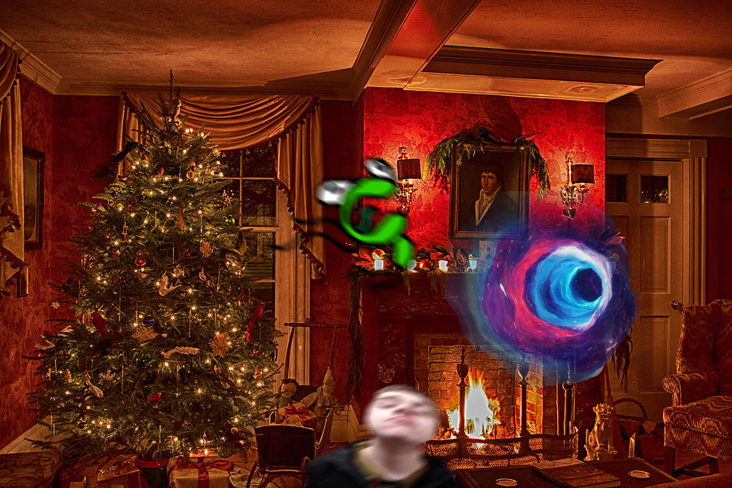
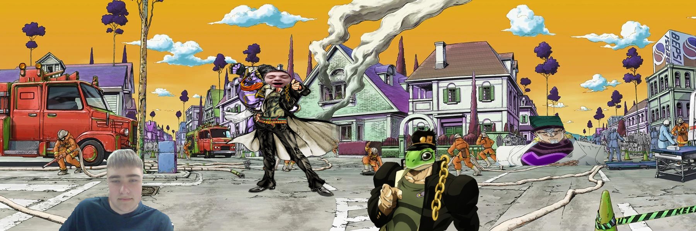
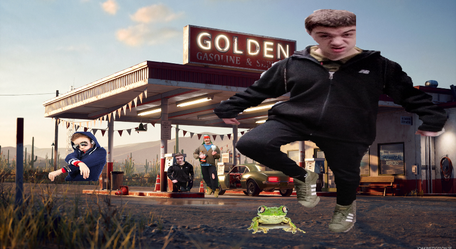

Page 8
Nadeem sat there in fear; pondering whether or not to run and forfeit. This was until he saw his Golden CCGameing figurine hit the floor. The spear had broken. The last item in his life-long collection had been destroyed. Nadeem Sassin was about to unleash his final stand when suddenly Kervin hit a button on the remote. Kervin didn’t know what it did but simply hoped that it might help him in his battle. He had already lost everything, what more could be lost?
A wormhole opened up, tearing the fabric of time and space directly smack in the middle of Nadeem’s living room. Nadeem’s fireplace relit, his lights turned on, and his windows slammed open letting in a violent chillful gust of wind. With no time to respond or do anything else of the sort, Kervin and Nadeem were sucked in.
The duo saw their lives flash before their eyes. Kervin saw his friends and family evolve as he grew old, Nadeem saw the time that he wrote a story about Logan and Jotaro Ranney; being the most eventful part of his life. The two fell for what seemed like seconds, but may have actually taken eons; knowing the effects this wormhole had on time.
With a flash of light, Nadeem and Kervin arose in a new world. They were stronger, more powerful. They saw Logan Ranney. This looked exactly like Nadeem’s story that was conveniently mentioned in the last paragraph! With these new forms; Kervin and Nadeem could fight like true men. They had nothing standing in their ways. This was until they noticed that Logan Ranney also saw them and tried to say hi. Nadeem and Kervin didn’t want to look suspicious, so they hit the button again.
This time they entered a more grounded world. Nadeem couldn’t find Kervin anywhere until he looked down. Kervin was a measly frog! Nadeem knew that this was his chance, he could stomp Kervin and walk away victorious. Sadly the same problem still stood. The two were being watched. An old hippie stood there watching with a Nadeem clone and some generic teen by his side. They may have been some sort of ragtag biker gang. They did end up walking away (they seemed very oblivious) but Nadeem still felt uncomfortable stomping a frog while people might be watching. Nadeem grabbed the remote, and summoned the portal.
